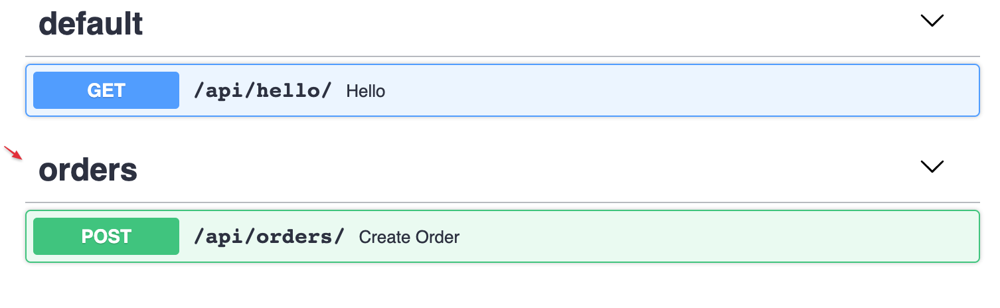
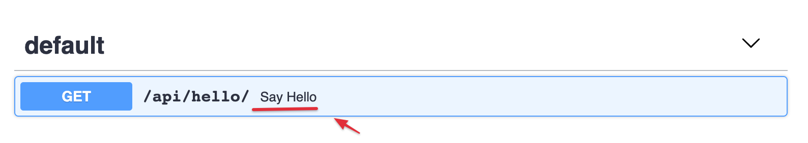
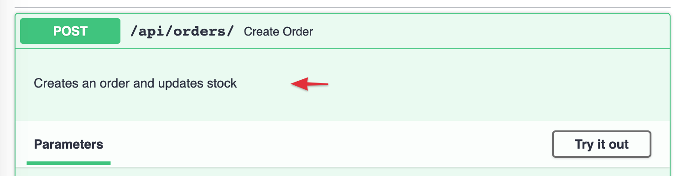
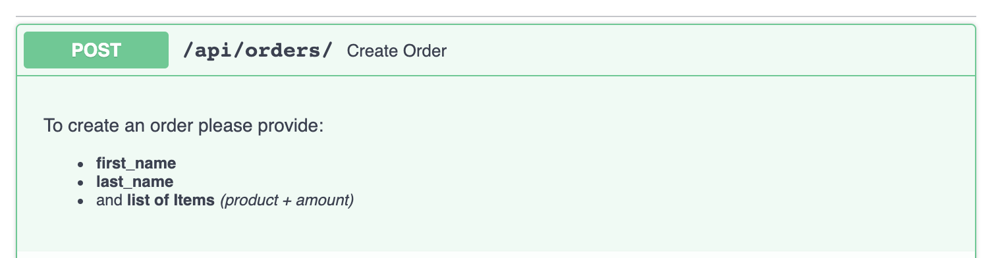
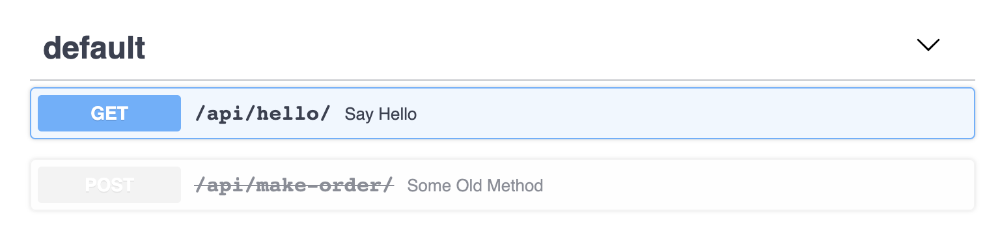

Operations parameters
OpenAPI Schema related
The following parameters interact with how the OpenAPI schema (and docs) are generated.
tags
You can group your API operations using the tags argument (list[str]).
@api.get("/hello/")
def hello(request, name: str):
return {"hello": name}
@api.post("/orders/", tags=["orders"])
def create_order(request, order: Order):
return {"success": True}
Tagged operations may be handled differently by various tools and libraries. For example, the Swagger UI uses tags to group the displayed operations.

Router tags
You can use tags argument to apply tags to all operations declared by router:
api.add_router("/events/", events_router, tags=["events"])
# or using constructor:
router = Router(tags=["events"])
summary
A human-readable name for your operation.
By default, it's generated by capitalizing your operation function name:
@api.get("/hello/")
def hello(request, name: str):
return {"hello": name}

If you want to override it or translate it to other language, use the summary argument in the api decorator.
@api.get("/hello/", summary="Say Hello")
def hello(request, name: str):
return {"hello": name}

description
To provide more information about your operation, use either the description argument or normal Python docstrings:
@api.post("/orders/", description="Creates an order and updates stock")
def create_order(request, order: Order):
return {"success": True}

When you need to provide a long multi line description, you can use Python docstrings for the function definition:
@api.post("/orders/")
def create_order(request, order: Order):
"""
To create an order please provide:
- **first_name**
- **last_name**
- and **list of Items** *(product + amount)*
"""
return {"success": True}

operation_id
The OpenAPI operationId is an optional unique string used to identify an operation. If provided, these IDs must be unique among all operations described in your API.
By default, Django Ninja sets it to module name + function name.
If you want to set it individually for each operation, use the operation_id argument:
...
@api.post("/tasks", operation_id="create_task")
def new_task(request):
...
If you want to override global behavior, you can inherit the NinjaAPI instance and override the get_openapi_operation_id method.
It will be called for each operation that you defined, so you can set your custom naming logic like this:
from ninja import NinjaAPI
class MySuperApi(NinjaAPI):
def get_openapi_operation_id(self, operation):
# here you can access operation ( .path , .view_func, etc)
return ...
api = MySuperApi()
@api.get(...)
...
deprecated
Mark an operation as deprecated without removing it by using the deprecated argument:
@api.post("/make-order/", deprecated=True)
def some_old_method(request, order: str):
return {"success": True}
It will be marked as deprecated in the JSON Schema and also in the interactive OpenAPI docs:

include_in_schema
If you need to include/exclude some operation from OpenAPI schema use include_in_schema argument:
@api.post("/hidden", include_in_schema=False)
def some_hidden_operation(request):
pass
openapi_extra
You can customize your OpenAPI schema for specific endpoint (detail OpenAPI Customize Options)
# You can set requestBody from openapi_extra
@api.get(
"/tasks",
openapi_extra={
"requestBody": {
"content": {
"application/json": {
"schema": {
"required": ["email"],
"type": "object",
"properties": {
"name": {"type": "string"},
"phone": {"type": "number"},
"email": {"type": "string"},
},
}
}
},
"required": True,
}
},
)
def some_operation(request):
pass
# You can add additional responses to the automatically generated schema
@api.post(
"/tasks",
openapi_extra={
"responses": {
400: {
"description": "Error Response",
},
404: {
"description": "Not Found Response",
},
},
},
)
def some_operation_2(request):
pass
Response output options
There are a few arguments that lets you tune response's output:
by_alias
Whether field aliases should be used as keys in the response (defaults to False).
exclude_unset
Whether fields that were not set when creating the schema, and have their default values, should be excluded from the response (defaults to False).
exclude_defaults
Whether fields which are equal to their default values (whether set or otherwise) should be excluded from the response (defaults to False).
exclude_none
Whether fields which are equal to None should be excluded from the response (defaults to False).
url_name
Allows you to set api endpoint url name (using django path's naming)
@api.post("/tasks", url_name='tasks')
def some_operation(request):
pass
# then you can get the url with
reverse('api-1.0.0:tasks')
See the Reverse Resolution of URLs guide for more details.
Specifying servers
If you want to specify single or multiple servers for OpenAPI specification servers can be used when initializing NinjaAPI instance:
from ninja import NinjaAPI
api = NinjaAPI(
servers=[
{"url": "https://stag.example.com", "description": "Staging env"},
{"url": "https://prod.example.com", "description": "Production env"},
]
)